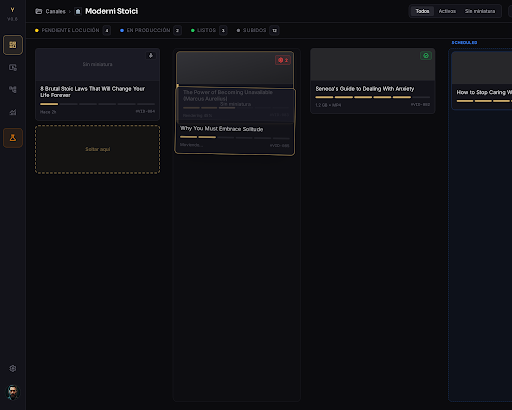
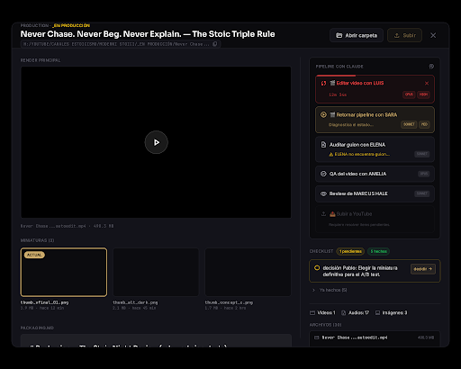
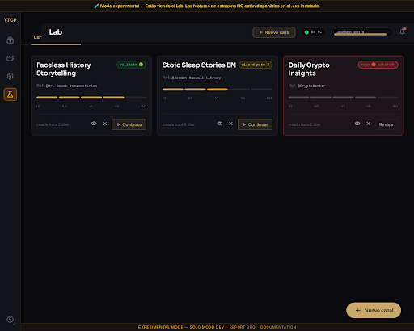
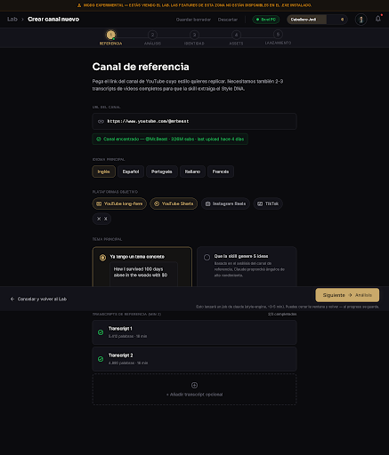

Pantallas v1 (sólido)
Home Dashboard
Abrir ↗"Hola, Caballero Jedi (nivel 6)" + KPIs (vídeos, jobs, logros, racha) + grid de canales activos y coming-soon + footer de accesos rápidos.
design/stitch/home-dashboard/screen.html

Kanban — Moderni Stoici
Abrir ↗5 columnas de estado filesystem-driven, cards con progress strip de los 6 hitos, badges de scheduled y active jobs, drag affordance visible.
design/stitch/kanban-channel/screen.html

Modal · Detalle de vídeo
Abrir ↗Layout 2:1, player + miniaturas + packaging.md a la izquierda, pipeline de skills + checklist + archivos a la derecha. LUIS en estado running con timer.
design/stitch/video-detail-modal/screen.html

Lab · Canales borrador
Abrir ↗Modo experimental con strip ámbar superior. 3 tabs (drafts/ideas/research). Cards de drafts con progress strip de los 5 pasos del wizard.
design/stitch/lab-dashboard/screen.html

Lab · Crear canal — Paso 1: Referencia
Abrir ↗Wizard de 5 pasos. Form con URL canal de referencia (con validación Algrow), idioma, plataformas objetivo, tema inicial y slots para 2-3 transcripts. Footer sticky con CTA gold que dispara style-engine.
design/stitch/lab-wizard-step-1/screen.html